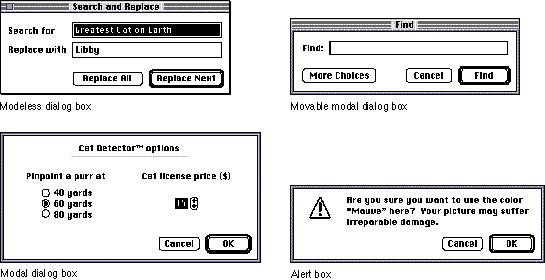

|
Chapter 6 - Dialog BoxesThis chapter describes the dialog boxes that you use in your products. It gives recommendations for when to use each kind of dialog box and what behaviors you need to implement for dialog boxes. This chapter also provides information on the standard layout of dialog boxes, the language to use in dialog boxes, and the standard appearance and behavior of the standard file dialog boxes and the save changes alert box. Dialog boxes are windows that provide a standard framework in which the computer can present alternatives from which the user can choose. The purpose of dialog boxes is to elicit responses from the user, typically several responses at one time. For example, the Print dialog box allows the user to specify the number of copies to be printed, the pages to be printed, whether there should be a title page, and other print-related options. When the user chooses a menu item that is followed by the ellipsis character (...), a dialog box appears. (Note that the appearance of a dialog box does not necessarily mean there should be an ellipsis character after a menu item.) All requests for information in dialog boxes should be phrased in plain language and in a nonthreatening manner. Alert boxes appear when the system software or an application needs to communicate information to the user. Alert boxes provide messages about error conditions and warn users about potentially hazardous situations or actions. An alert box is a type of dialog box and thus follows many of the same guidelines. From a programming perspective, dialog boxes and alert boxes are windows. In the language of the human interface, dialog boxes and alert boxes are considered unique elements, each with a specific appearance and behavior, as described in this chapter. A dialog box is a rectangle that may contain text, controls, and icons. Each dialog box contains some text to indicate which command or condition caused it to be displayed and what its function is. In some cases this text is a title for the dialog box. The text in a dialog box should be in the system font size, which is normally 12-point type. Text that is smaller than the system font size sometimes cannot be localized. Controls, such as buttons, radio buttons, and checkboxes, are described in Chapter 7, "Controls," which begins on page 203. Text entry fields in a dialog box follow the guidelines given in Chapter 10, "Behaviors," which begins on page 267. In general you use four types of dialog boxes in your application:
Be aware that users can change the colors of standard dialog boxes by using the Color control panel; this is particularly important if you decide to create custom alert boxes, modeless dialog boxes, movable modal dialog boxes, or modal dialog boxes. If you use the default window color table with your custom window definitions, you can be sure that the colors you use are consistent with any color that the user has access to with the Color control panel. You can use the Palette Manager to associate a color palette with a window definition. For more information, see the discussion of the Palette Manager in Inside Macintosh. Figure 6-1 Examples of dialog box types  Chapter Contents |